Flutter · 모바일 앱 · AI/RAG
김택권
KIM TAEK KWON
Flutter 상용 앱 개발 경험을 바탕으로 FastAPI, ML, AI/RAG까지 넓혀가고 있는 모바일 앱 개발자입니다.
총 개발 경력13년 4개월
마켓 출시·운영앱 80여종
개인 앱 프로젝트Flutter 앱 4종
진행 중인 확장게임 2종 · 챗봇 앱 1종
Flutter Apps
기획, 제작, 출시와 운영까지 모두 다룬 앱 프로젝트
스토어 등록, GitHub 공개, FastAPI 백엔드 연동, 알림, 다국어, 실시간 동기화까지 프로젝트별로 다뤘습니다.
HabitCell
일별 기록, 히트맵, Streak 분석을 제공하는 습관 추적 앱입니다. 습관별 통계와 로컬 알림을 포함합니다.

GlucoInsight
성인 당뇨 위험도 참고 예측과 병원 찾기를 제공하는 건강관리 앱입니다. 공공데이터와 지도 앱 연동을 다룹니다.

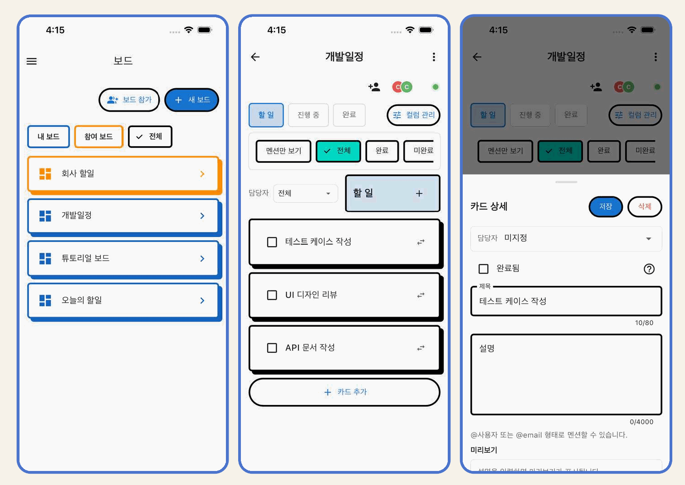
AI/RAG Project
관광 질문을 추천 카드로 바꾸는 챗봇 흐름
RAG와 관광 API를 활용해 사용자 조건에 맞는 관광지를 추천 카드로 보여주는 무장애 관광 챗봇입니다.
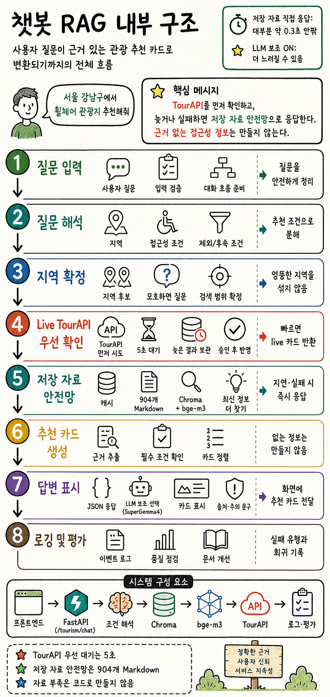
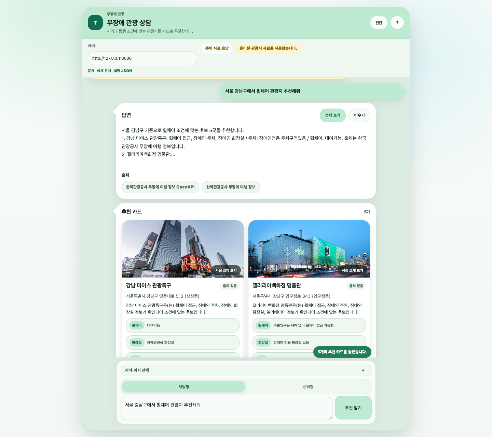
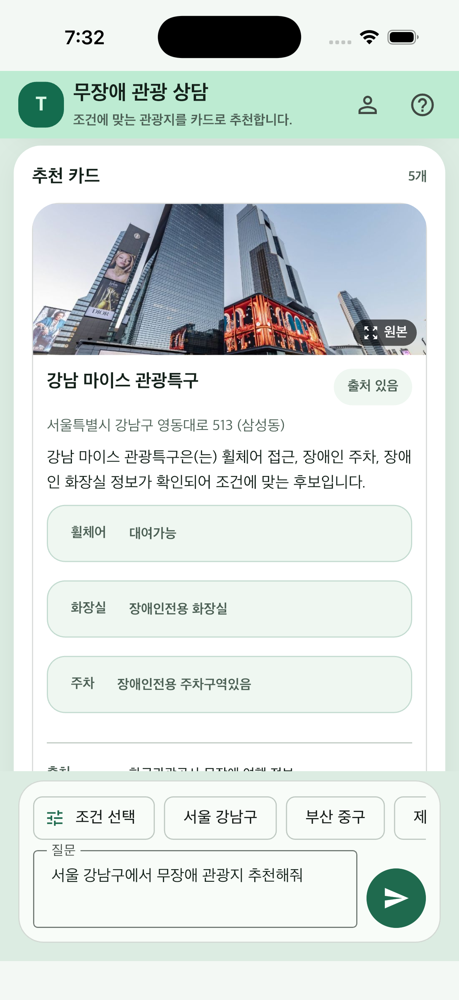
무장애 관광 챗봇
Flutter 앱과 FastAPI 백엔드를 연결해 관광 상담 화면을 구성했습니다. RAG와 관광 API를 함께 활용합니다.
- 질문 입력지역, 접근성 조건, 제외 조건을 분리
- TourAPI 확인빠른 응답이 가능하면 live 결과를 반영
- 저장 자료 검색ChromaDB와 Markdown 자료로 지연·실패 상황을 보완
- 추천 카드 표시출처와 주의 문구를 함께 제공
Flutter / Flame
게임 프로젝트


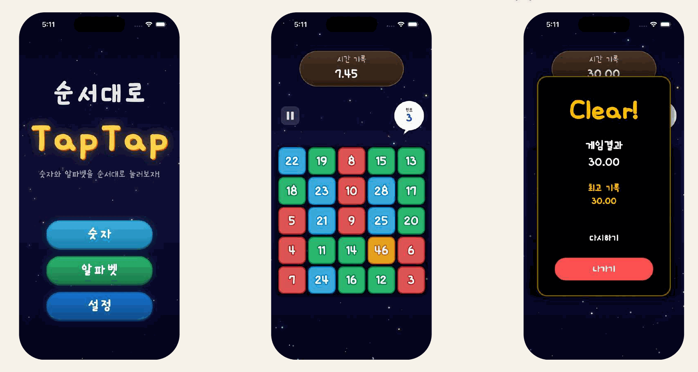
Tech Stack
프로젝트로 설명하는 기술 스택
Flutter App
Flutter · Riverpod · Hive · SQLite
모바일 앱 설계, 개발, 스토어 출시와 운영 경험Backend / API
FastAPI · REST · WebSocket · FCM
앱과 서버, 실시간 동기화, 푸시 노티피케이션 적용 경험AI / ML / RAG
AI · ML · DL · 데이터 분석 교육 이수
RAG, OpenAPI 기반 관광 챗봇 및 ML 기반 예측 보조 앱 프로젝트 구현IoT / Hardware
Arduino · ESP32 · Serial · MQTT-SSL
소프트웨어와 장치 연동까지 다룬 클라이언트 경험Career
교육 콘텐츠와 모바일 앱 운영 경험
그로비교육
태블릿 플랫폼용 MySuperV, 슈퍼브레인, 예술놀이터 등 유아 교육 콘텐츠 앱 개발 및 라이브서비스
천재교과서
개발 업무 프로세스 구축, 팀 빌딩, 계열사 교육용 모바일 앱 개발 및 유지보수
천재교육
교육용 모바일 앱 개발, 마켓 업데이트 대응, AR/OpenCV 기반 사진 인식 및 AR 서비스 제작
Unity Content
회사 프로젝트

마이 슈퍼 브이
캐릭터와 상호작용하며 기본 생활습관, 체험 학습, 미니 게임을 진행하는 육성형 앱입니다.
영상 보기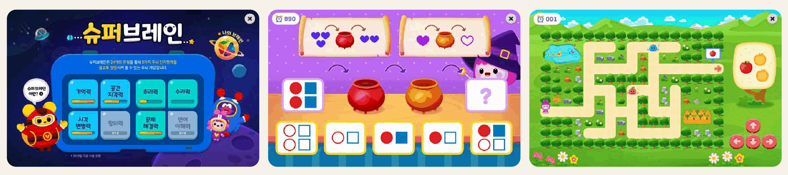
슈퍼 브이 브레인
기억력, 공간 지각력, 추리력, 시각 변별력, 문제 해결력, 수리력으로 구성된 두뇌 인지 앱입니다.
영상 보기
예술 놀이터
피아노, 드럼 연주와 그림 그리기, 스티커 꾸미기를 제공하는 예체능 활동 앱입니다.
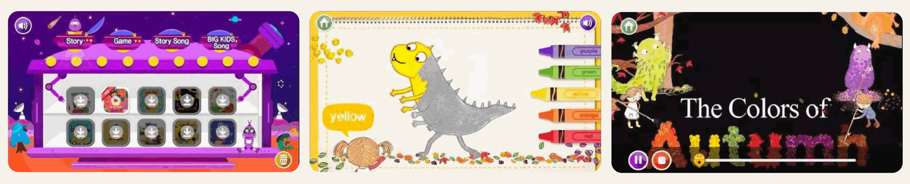
빅키즈 시리즈
영어, 한글, 수학 책과 연동한 영상·송·게임 구성.
영상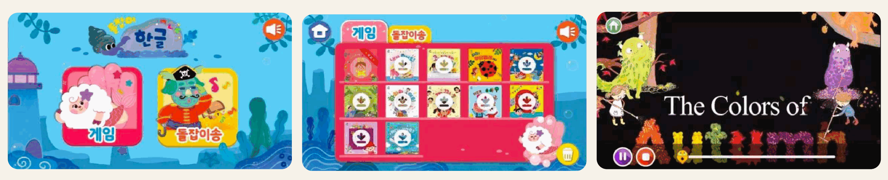
돌잡이 시리즈
영어, 한글, 수학, 명화 책과 연동한 콘텐츠 구성.
영상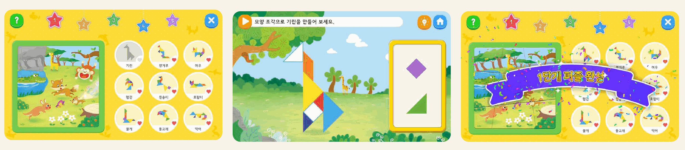
칠교탐험대
칠교 블록을 조립해 퍼즐을 완성하는 인터렉티브 게임 앱.
영상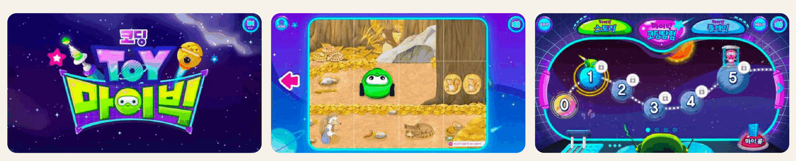
코딩토이 마이빅
블루투스 교보재 로봇과 앱을 연동한 코딩교육 앱.
영상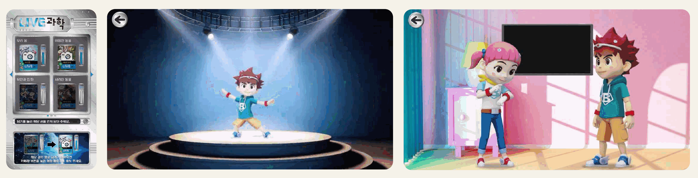
Live과학 시리즈
Live과학 전집과 연동한 영상·게임 앱.
Google Play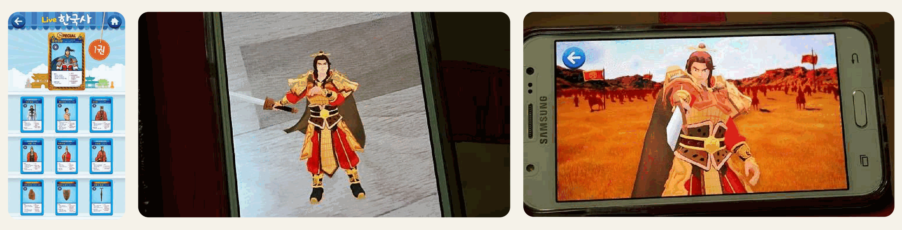
Live한국사 시리즈
증강현실 카드와 주제별 영상을 볼 수 있는 앱.
Google PlayHardware / IoT
하드웨어 연동
Archive / Links
이전 작업과 외부 링크
우주게임: 우주좀비 (Unity)
생명의 빛 - Touch 바이블 (Lua)
ATTACK "Z" (Lua)
Line Pang (Lua)
시공미디어 앱북 시리즈 (ActionScript)
시사붐붐잉글리쉬앱북 시리즈 (ActionScript)
LG 스마트 TV: 시사 잉글리쉬 HB Kids 시리즈 (ActionScript)

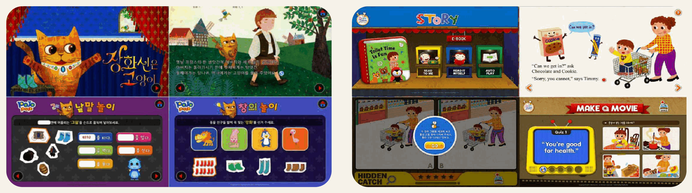